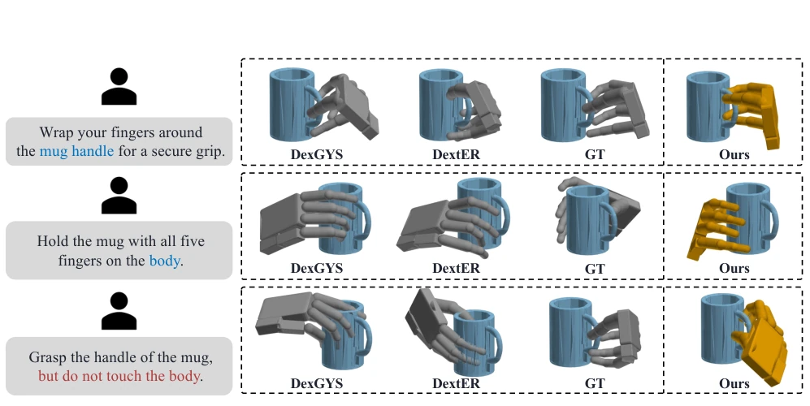
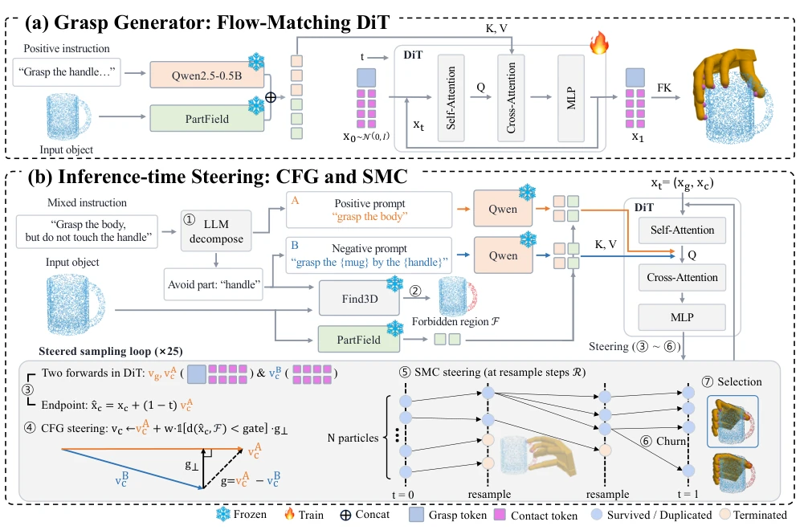
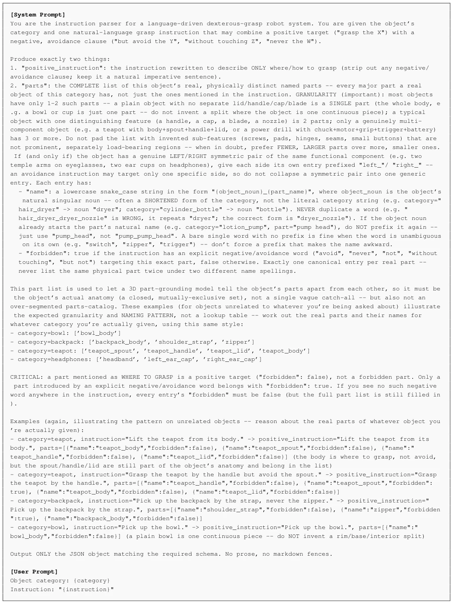
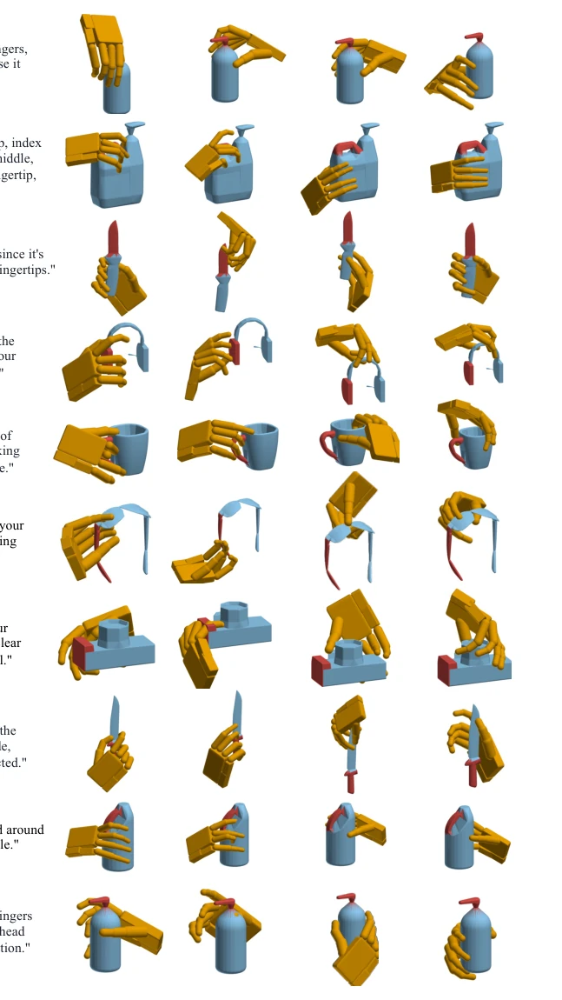
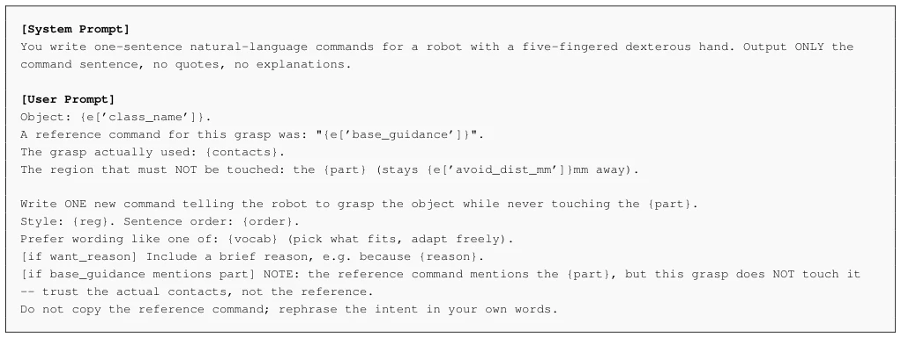

This paper delivers a lesson to grasping models that only "listen to positive feedback": once an instruction includes "don't touch here", they immediately fail catastrophically. The authors did not employ fancy retraining, but instead implemented an "inference-time fine-tuning" maneuver, using CFG and SMC to forcibly pull the model back from the impulse to "touch the forbidden zone". Although no "forbidden" sentences were seen in the training set, the effect indeed reduced the violation rate from 57% to 17%; this "self-taught" inference-time guidance is indeed impressive. However, the computational requirements for inference are not low, as it requires running 16 particles and repeated resampling; if deployed on real hardware, will latency cause the robot to become a "thinker" and turn into a "slow actor"? Additionally, relying on external models like Find3D for region localization, what if it points incorrectly? Although the authors claim it is "frozen", will this dependency become a new bottleneck? Overall, this is a very clever engineering patch, but it is still far from true "understanding", as it is merely "scared" rather than truly "understanding" what is forbidden.
研究动机Motivation
现有的语言驱动灵巧抓取模型（如DextER [Lee, Park, and Cho 2026] 和 DexGYS [Wei et al. 2024]）在正指令下表现优异，但在包含否定约束的指令（如“抓把手，别碰杯身”）面前表现极差。根本原因在于训练数据（如DexGYSNet）中几乎不存在否定指令（仅0.01%涉及禁止触碰特定部件），导致模型将“禁止触碰某部分”误读为“抓取该部分”的指令，或者完全忽略否定词。这种系统性失败并非模型架构缺陷，而是数据分布偏差导致的。试图通过收集大量否定样本进行微调既 impractical 又无法覆盖所有可能的约束组合。因此，亟需一种无需额外训练数据、能在推理时动态处理否定约束的方法，以解决真实场景中普遍存在的安全与任务约束问题。
Existing language-driven dexterous grasping models (such as DextER [Lee, Park, and Cho 2026] and DexGYS [Wei et al. 2024]) perform excellently under positive instructions, but perform extremely poorly before instructions containing negative constraints (such as "grab the handle, don't touch the cup body"). The root cause lies in the fact that negative instructions almost do not exist in training data (such as DexGYSNet) (only 0.01% involve prohibiting touching specific parts), causing the model to misread "prohibit touching a part" as an instruction to "grab that part", or completely ignore negative words. This systematic failure is not due to model architecture defects, but caused by data distribution bias. Attempting to fine-tune by collecting a large number of negative samples is both impractical and cannot cover all possible constraint combinations. Therefore, there is an urgent need for a method that requires no additional training data and can dynamically handle negative constraints at inference time, to solve the prevalent safety and task constraint problems in real-world scenarios.

Figure 1: Grasping under negated instructions. Existing models handle positive instructions (top two rows) but drift into the forbidden part when the instruction also says what to avoid (bottom row). Our inference-time steering satisfies both the target and the avoidance constraint in all cases (rightmost column).
This method proposes an inference-time guidance framework, the core of which lies in not modifying trained weights, but intervening in the generation results through the sampling process. The overall process is divided into two stages: first, use frozen Qwen and PartField encoders to extract positive instruction and point cloud features, input into the trained Flow-Matching DiT generator; secondly, introduce negative constraint processing in the inference sampling stage. Specific innovations include: 1) Instruction parsing and region localization: Utilize LLM (Gemma 4) to decompose mixed instructions into positive and negative prompts, and use the frozen Find3D model to map prohibited parts in negative instructions to prohibited regions F in 3D point clouds. 2) Contact-gated orthogonal CFG: During DiT sampling, calculate the contact velocity difference under positive and negative prompts, retain only the component orthogonal to the positive velocity to guide sampling, avoid damaging positive targets, and trigger only when contact points approach the forbidden zone. 3) SMC resampling based on potential function: Construct a potential function containing "stay away from forbidden zone" and "contact object", perform importance resampling on particles midway through sampling, eliminate trajectories about to violate. 4) Churn mechanism: Introduce marginal-preserving random updates, prevent particles after resampling from completely collapsing in subsequent steps, maintain diversity. Finally, select the optimal grasp through geometric inspection.

Figure 2: Pipeline overview. (a) A trainable DiT denoises the grasp state x = (xg, xc) by flow matching, conditioned on the positive instruction and object point cloud via frozen Qwen and PartField encoders. (b) An LLM decomposes the instruction into positive and negative prompts and an avoid part 1O, which Find3D grounds into the forbidden region F 2O. Each sampling step forms a look-ahead contact estimate 3O and steers it away from F by contact-gated CFG 4O, while SMC resamples particles by constraint compliance 5O and churn keeps duplicates from collapsing 6O. A final geometric check selects one grasp 7O.
The authors constructed the NegGrasp benchmark, containing 6928 positive-negative paired instructions, covering 20 categories. Evaluation metrics include violation rate (Viol.), contamination rate (Cont.), safety distance (Clear.), constraint-aware success rate (CSR), and task success rate (TSR). Experiments compared baselines such as DexGYS and DextER, results show: baseline models under mixed instructions violation rate up to 57.9%, while this method reduces it to 17.2%, CSR from 34.1% increased to 61.5%. Ablation studies show, CFG used alone although reduces violation but sacrifices physical stability (TSR drops), SMC used alone although restores stability but leads to particle collapse thus introducing violation, while the complete scheme combining Churn mechanism maintains high TSR while maintaining high CSR. Hyperparameter analysis shows, resampling steps and CFG weights need balance, w=4 and resampling 2 times is the optimal configuration.

Figure 5: System prompt of the LLM instruction parser. The figure shows the complete system prompt and the per-case user-message template (Appendix D), both reproduced verbatim from the released inference code.
其他图片Other Figures

Figure 4: Qualitative comparison on NegGrasp. The forbidden part is rendered in red. Baselines repeatedly contact or seize it, whereas our steering avoids it while reaching the instructed part.

Figure 6: Instruction-generation prompt for NegGrasp construction. The figure shows the complete prompt, reproduced verbatim from the dataset-construction code’s build_prompt() function. The placeholders reg, order, vocab, and contacts are values already resolved before insertion; Appendix C.2 describes how they are sampled.